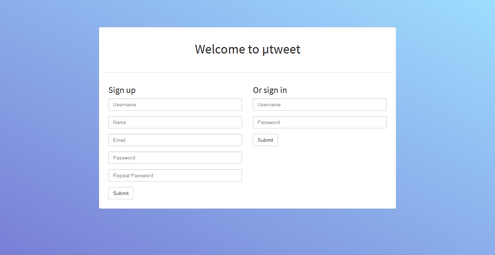

utweet is a small Twitter clone inspired by Flask's minitwit example.
The Models
We'll make a package, utweet.models, specifically for the models (users,
tweets, et cetera). We'll build an abstract interface that could be implemented
over an SQL database, a document DB, or, in the case of this example, a simple
in-memory storage.
First, we create a models.lisp and add the system definition:
(in-package :cl-user)
(defpackage utweet.models
(:use :cl)
;; Users
(:export :user
:user-username
:user-full-name
:user-password
:user-avatar-url)
;; Subscriptions (follows)
(:export :subscription
:subscription-follower
:subscription-followed)
;; Tweets
(:export :tweet
:tweet-author
:tweet-text
:tweet-timestamp)
;; Some functions
(:export :find-user
:register-user
:followers
:following
:tweet
:user-timeline
:user-tweets
:follow))
(in-package :utweet.models)The actual class definitions are fairly straightforward: We define user,
which represents a user, subscription, which represents a user following
another, and tweet, which is a single tweet.
(defclass user ()
((username :accessor user-username
:initarg :username
:type string)
(full-name :accessor user-full-name
:initarg :full-name
:type string)
(email :accessor user-email
:initarg :email
:type string)
(password :accessor user-password
:initarg :password
:type string)
(avatar-url :accessor user-avatar-url
:initarg :avatar-url
:type string))
(:documentation "A user."))
(defclass subscription ()
((follower :reader subscription-follower
:initarg :follower
:type string
:documentation "The follower's username.")
(followed :reader subscription-followed
:initarg :followed
:type string
:documentation "The followed's username."))
(:documentation "Represents a user following another."))
(defclass tweet ()
((author :reader tweet-author
:initarg :author
:type string
:documentation "The author's username.")
(text :reader tweet-text
:initarg :text
:type string)
(timestamp :reader tweet-timestamp
:initarg :timestamp
:initform (local-time:now)))
(:documentation "A tweet."))Now, we won't discuss the actual implementation of the functions. Those are availble in the source code. We'll just present the function documentation which describes the interface.
find-user(username)username, returns NIL if none is found.register-user(&key username full-name email password)password.followers(user)user instances) that follow user.following(user)user instances) the user follows.tweet(author text)author containing text.user-timeline(user)user's timeline.user-tweets(user)user's tweets, sorted through time.follow(follower followed)user instances: follower and followed.The Views
(in-package :cl-user)
(defpackage utweet.views
(:use :cl :lucerne)
(:export :app))
(in-package :utweet.views)
(annot:enable-annot-syntax)(defapp app
:middlewares (clack.middleware.session:<clack-middleware-session>
(clack.middleware.static:<clack-middleware-static>
:path "/static/"
:root (asdf:system-relative-pathname :lucerne-utweet
#p"examples/utweet/static/"))))(djula:add-template-directory
(asdf:system-relative-pathname :lucerne-utweet #p"examples/utweet/templates/"))
(defparameter +timeline+ (djula:compile-template* "timeline.html"))
(defparameter +index+ (djula:compile-template* "index.html"))
(defparameter +profile+ (djula:compile-template* "profile.html"))
(defparameter +user-list+ (djula:compile-template* "user-list.html"))(defun current-user ()
"Find the user from request data."
(let ((username (lucerne-auth:get-userid)))
(when username
(utweet.models:find-user username))))
(defun display-tweets (tweets)
"Go through a list of tweets, and create a list of plists with data from the
tweet and its author."
(loop for tweet in tweets collecting
(list :author (utweet.models:find-user (utweet.models:tweet-author tweet))
:text (utweet.models:tweet-text tweet))))@route app "/"
(defview index ()
(if (lucerne-auth:logged-in-p)
;; Serve the user's timeline
(let* ((user (current-user)))
(render-template (+timeline+)
:username (utweet.models:user-username user)
:name (utweet.models:user-full-name user)
:tweets (display-tweets (utweet.models:user-timeline user))))
(render-template (+index+))))
@route app "/profile/:username"
(defview profile (username)
(let* ((user (utweet.models:find-user username))
;; The user's timeline
(user-tweets (utweet.models:user-tweets user))
;; Is the user viewing his own profile?
(is-self (string= (lucerne-auth:get-userid)
username)))
(render-template (+profile+)
:user user
:tweets (display-tweets user-tweets)
:is-self is-self)))@route app "/followers/:username"
(defview user-followers (username)
(let ((user (utweet.models:find-user username)))
(render-template (+user-list+)
:user user
:title "Followers"
:users (utweet.models:followers user))))@route app "/following/:username"
(defview user-following (username)
(let ((user (utweet.models:find-user username)))
(render-template (+user-list+)
:user user
:title "Following"
:users (utweet.models:following user))))@route app (:post "/tweet")
(defview tweet ()
(if (lucerne-auth:logged-in-p)
(let ((user (current-user)))
(with-params (tweet)
(utweet.models:tweet user tweet))
(redirect "/"))
(render-template (+index+)
:error "You are not logged in.")))Authentication
@route app (:post "/signup")
(defview sign-up ()
(with-params (name username email password password-repeat)
;; Does a user with that name exist?
(if (utweet.models:find-user username)
;; If it does, render the landing template with a corresponding error
(render-template (+index+)
:error "A user with that name already exists.")
;; We have a new user. Do both passwords match?
(if (string= password password-repeat)
;; Okay, the passwords are a match. Let's create the user and return
;; the user to the homepage
(progn
(utweet.models:register-user :username username
:full-name name
:email email
:password password)
(redirect "/"))
;; The passwords don't match
(render-template (+index+)
:error "Passwords don't match.")))))@route app (:post "/signin")
(defview sign-in ()
(with-params (username password)
;; Check whether a user with this name exists
(let ((user (utweet.models:find-user username)))
(if user
(if (cl-pass:check-password password
(utweet.models:user-password user))
(progn
;; Log the user in
(lucerne-auth:login username)
(redirect "/"))
;; Wrong password
(render-template (+index+)
:error "Wrong password."))
;; No such user
(render-template (+index+)
:error "No such user.")))))@route app "/signout"
(defview sign-out ()
(when (lucerne-auth:logged-in-p)
(lucerne-auth:logout))
(redirect "/"))